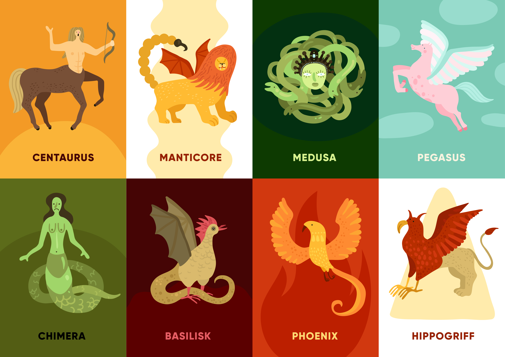
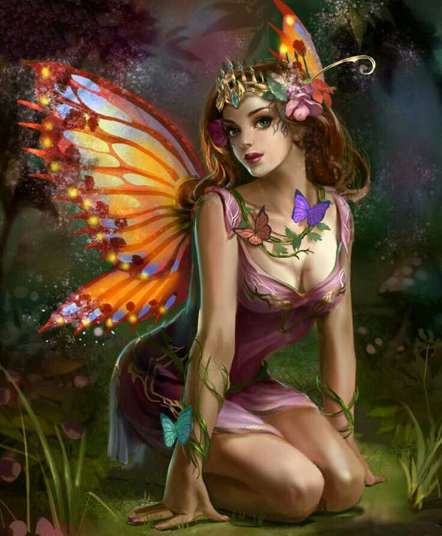
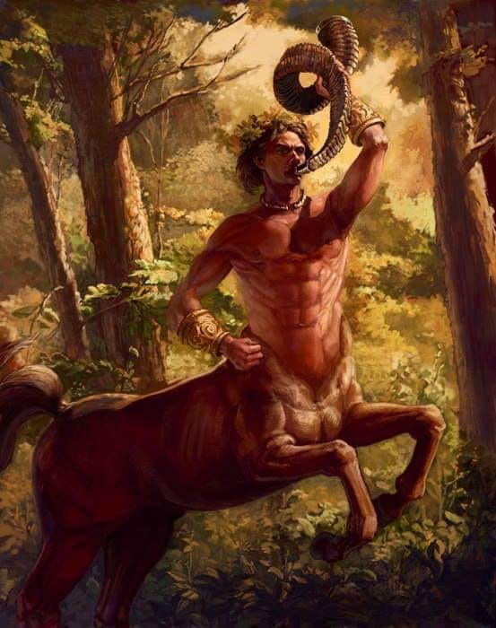
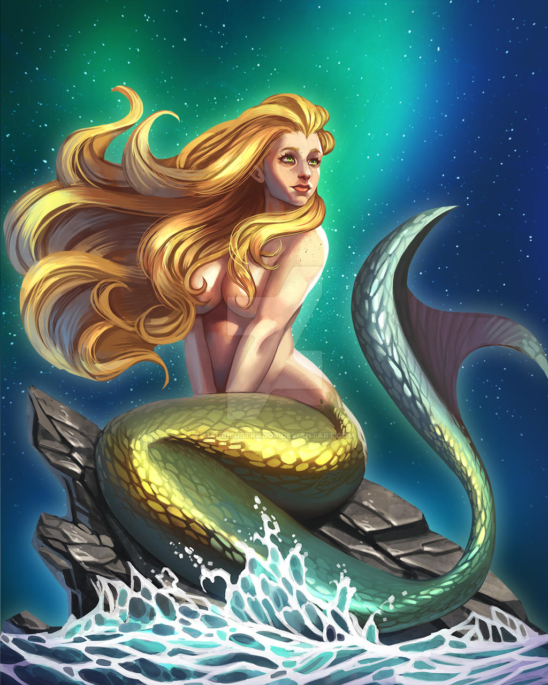
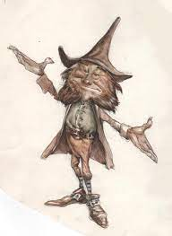
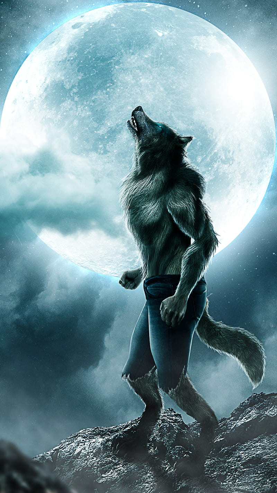
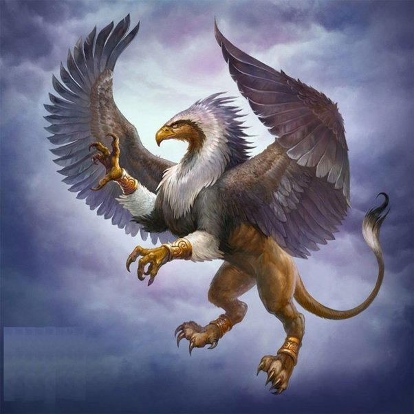

auto_fix
Criaturas Mitológicas

Durante siglos o más, las historias de criaturas mitológicas, bestias míticas, dioses nórdicos, dioses egipcios han cautivado nuestro interés. Las historias de animales míticos, monstruos míticos y otras criaturas míticas geniales siguen extendiéndose por todo el mundo a través de los libros, el cine, la televisión y muchas otras fuentes de comunicación.
A veces, estas criaturas místicas son puramente simbólicas y nos ofrecen un acercamiento a los miedos, deseos o valores de una determinada cultura, mientras que otros cuentos populares sobre simpáticas criaturas míticas se basan en la naturaleza humana, o quizás simplemente se inventan para mantener a raya a los niños desobedientes.
travel_explore
15 criaturas mitológicas impresionantes
auto_awesome
- Golems
- Oni
- Cíclope
- Ogro
- Duendes
- Nomos
- Hadas
- Sirena
- Minotauro
- Centauros
- Hombre Lobo
- Grifo
- Mounstro del lago ness
- Ave Fénix
- Unicornio
Mis Favoritas
|  |
|  |
 |
Algunas criaturas famosas
|  |
|  |
 |